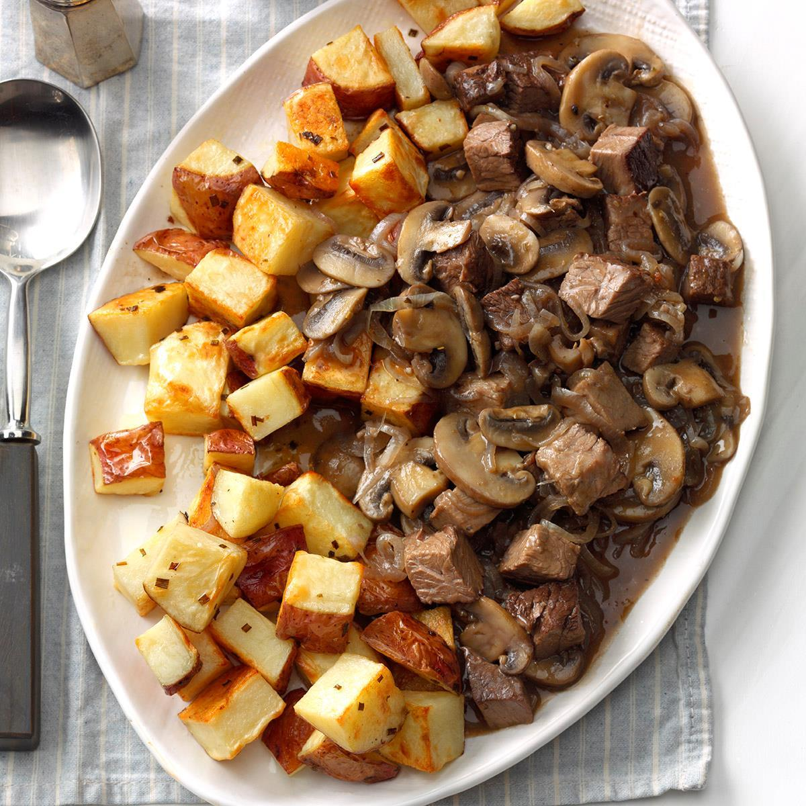
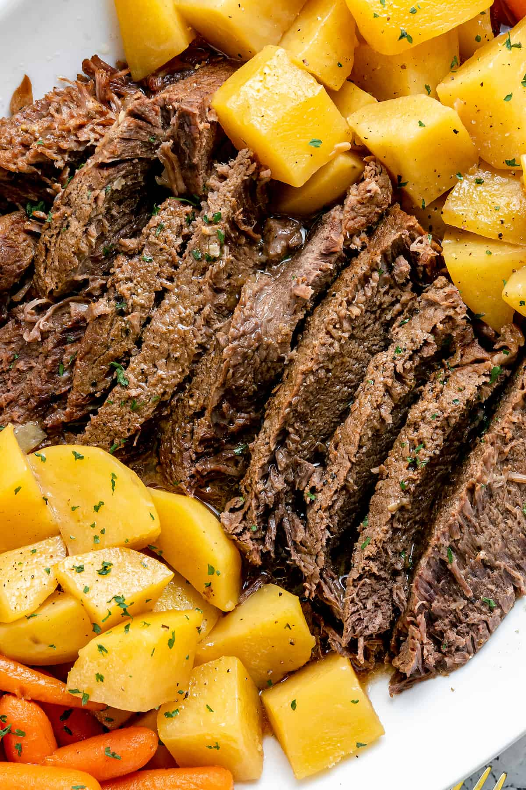
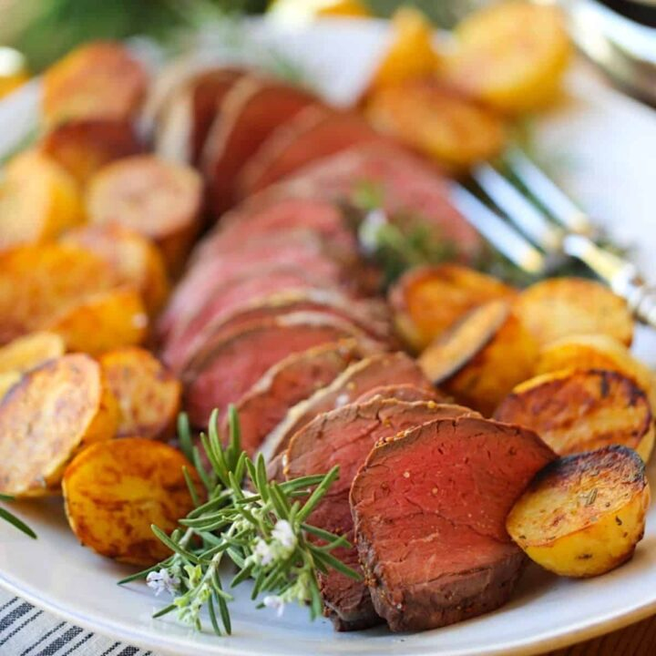
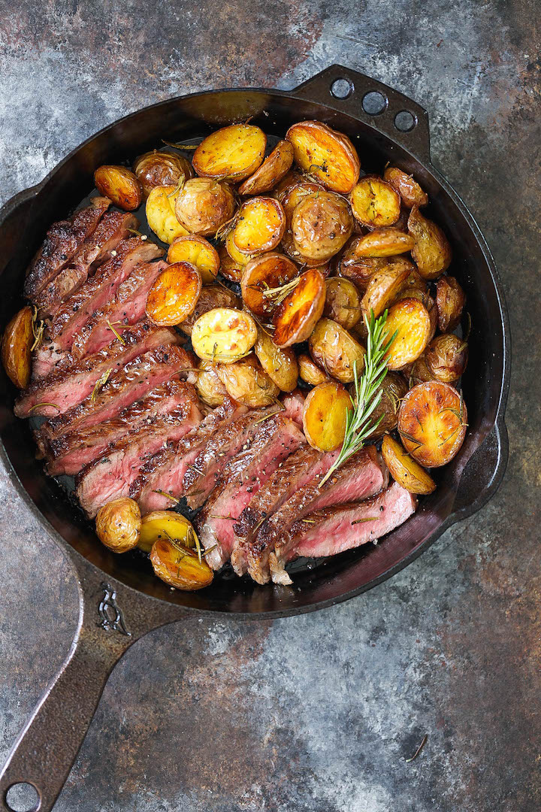
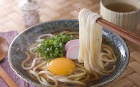

Recipes
Double Chocolate Cookies
Origin: Michigan Source: Family Recipe Category: Dessert
My daughter learned to make these cookies at a baking camp at Zingermanns and has tweaked the recipe to fit the taste buds of her siblings. They are extremely sugary so the salt helps to balance it. Note, these cookies are best eaten very quickly.
Recipe Ingredients
- Unsalted butter
- Granulated Sugar
- Packed light or dark brown sugar
- Large egg
- Pure vanilla extract
- Semi-sweet chocolate chunks (melted)
- All-purpose flour
- Natural unsweetened cocoa powder
- Baking soda
- Salt
- Semi-sweet chocolate chunks
Recipe Steps
- In a mixing bowl cream together the butter, granulated sugar, and brown sugar
- Add the egg and vanilla extract and beat well
- Add the melted chocolate
- In a separate bowl combine the flour, baking soda, cocoa powder and salt
- Combine the wet and dry ingredients
- Add the unmelted chocolate chunks.
- Form 15 cookies and place on a baking sheet.
- Cook for 12 to 13 minutes at 350 degrees.
Additional Food images


Chinese Hot and Sour Soup
Origin: China Source: Tofu, mushrooms, and bamboo shoots Category: Soup
Chinese Hot and Sour Soup (酸辣汤) is a popular and flavorful soup known for its spicy and tangy taste. It's made with a variety of ingredients including tofu, mushrooms, and bamboo shoots.
Recipe Ingredients
- Tofu
- Mushrooms
- Water
- Pork
- Bamboo shoots
- Soy sauce
Recipe Steps
- Boil
- Simmer
- Cooking
- Dipping sauces
Additional Food images


Chinese Jiaozi
Origin: China Source: Flour, pork and cabbage Category: Main dish
Chinese dumplings (Jiaozi, 饺子) are stuffed parcels made of unleavened dough and savoury fillings consisting of minced ingredients like meat, egg, tofu, or vegetables. They can be boiled, pan-fried or steamed.
Recipe Ingredients
- Flour
- Water
- Pork
- Cabbage
Recipe Steps
- Dough
- Filling
- Folding
- Cooking
- Dipping sauces
Additional Food images


Roast Potatoes and Beef
Origin: America Source: American recipe Category: Main dish Roast potatoes and beef is a classic and hearty dish loved by many. It combines the flavors of tender beef and crispy roast potatoes, creating a satisfying and delicious meal. This dish is often associated with special occasions or Sunday dinners, where families and friends gather to enjoy a comforting and flavorful feast.
Recipe Ingredients
- Beef
- Potatoes
- Salt
- Pepper
Recipe Steps
- Preheat the oven.
- Season the beef generously with salt, pepper, garlic powder, dried rosemary, and dried thyme. Let it sit at room temperature for about 30 minutes to allow the flavors to penetrate the meat.
- In a large bowl, toss the potato chunks or wedges with olive oil until they are evenly coated. Season with salt and pepper to taste.
- Place the seasoned beef in a roasting pan or on a baking sheet. If desired, you can sear the beef in a hot skillet with some oil for a few minutes on each side before transferring it to the oven.
- Arrange the oiled and seasoned potato chunks or wedges around the beef in the roasting pan or on the baking sheet.
- Place the roasting pan or baking sheet in the preheated oven and roast for about 25-30 minutes per pound.
- Halfway through the cooking time, carefully flip the potatoes with a spatula to ensure even browning.
- Once the beef reaches your desired level of doneness, remove it from the oven and let it rest for about 10-15 minutes before slicing.
- Serve the sliced beef with the roast potatoes and any desired accompaniments such as roasted vegetables, Yorkshire pudding, gravy, or a side salad.
Additional Food images
  Japanese Udon
Origin: Japan Source: Japanese cuisine Category: Main dish Udon is a type of thick wheat noodle that is commonly enjoyed in Japanese cuisine. It has a chewy texture and is often served in a savory broth with various toppings. This hearty and comforting dish is a staple in Japanese households and is also popular worldwide.
Recipe Ingredients
- Udon noodles
- Dashi
- Soy sauce
- Mirin
- Salt
Recipe Steps
- Boil a pot of water and cook the udon noodles according to the package instructions.
- While the noodles are cooking, prepare the broth. You can use a pre-made udon broth or make your own by combining dashi, soy sauce, mirin, and salt to taste. Heat the broth in a separate pot.
- Once the noodles are cooked, drain them and rinse with cold water to remove excess starch.
- Divide the cooked udon noodles into serving bowls.
- Pour the hot udon broth over the noodles, making sure they are fully submerged.
- Add toppings of your choice, such as sliced green onions, tempura, kamaboko (fish cake), nori (seaweed), or grated daikon radish.